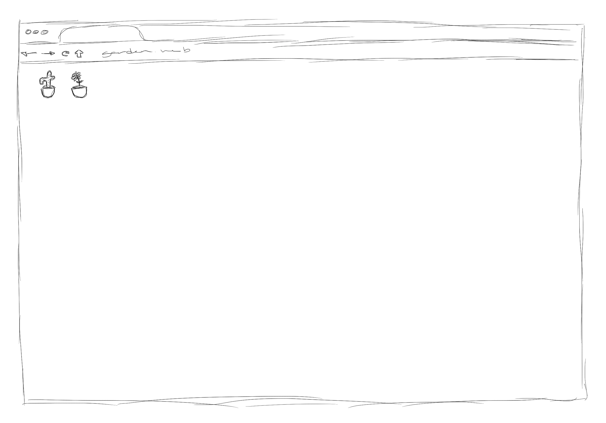

reading response no. 01
Laurel Schwulst, My Website is a Shifting House...
"website as garden"

concept: a website that grows only as its audience does; when the website is opened, a single plant gets added to the page, and that's it. nothing more, nothing less.
reading response no. 02
reading response no. 03